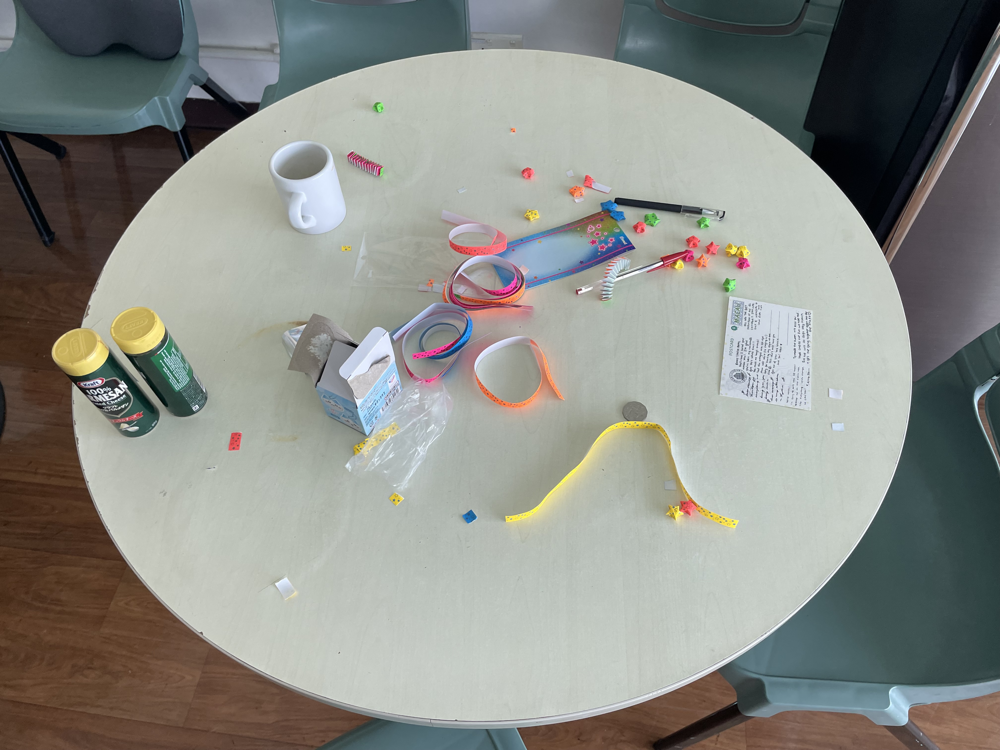
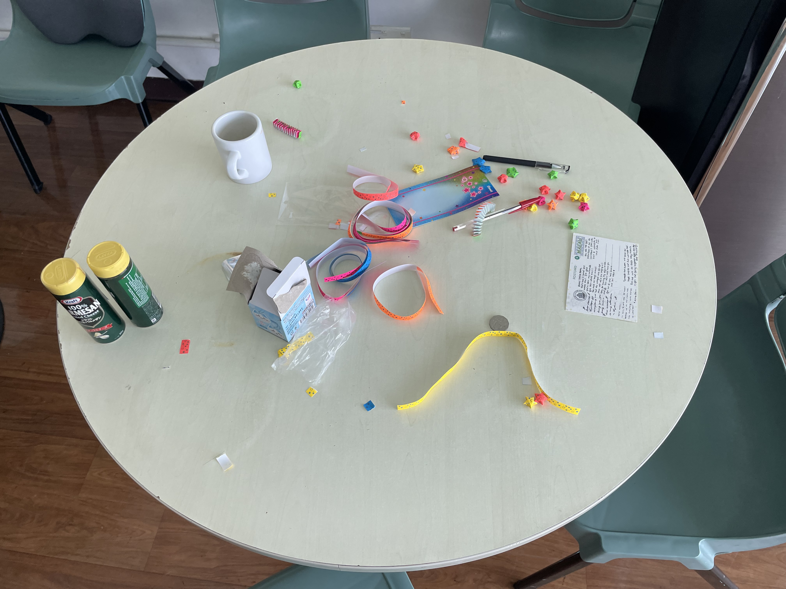

09 Août - Hong Kong
Premiers adieux. Des valises de partout. Des cartes d'au revoir. De petits cadeaux sont échangés. Tout le monde attend son tour pour partir. On est touxtes très triste de partir, on a encore quelques heures. Enfin moi je pars mercredi, j'ai encore le temps. On se remémore des souvenirs de nos premiers jours ici, de sorties en ville et de randonnées.


 
← Retour

← Retour